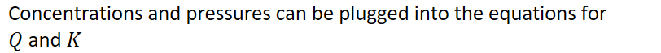
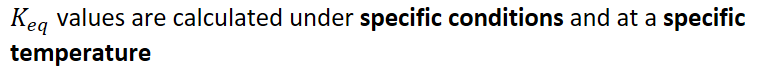
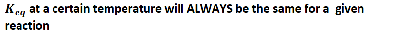

{width="8.458333333333334in" height="0.6875in"}
{width="8.0in" height="0.375in"}
{width="8.083333333333334in" height="0.7083333333333334in"}
{width="6.135416666666667in" height="0.375in"}
{width="8.458333333333334in" height="0.7083333333333334in"}
{width="4.84375in" height="0.3541666666666667in"}
{width="5.197916666666667in" height="0.5416666666666666in"}
Everything in the numerator (products) will be directly proportional to K
Make sure to still account for exponents
Everything in the denominator (reactants) will be inversely proportional to K